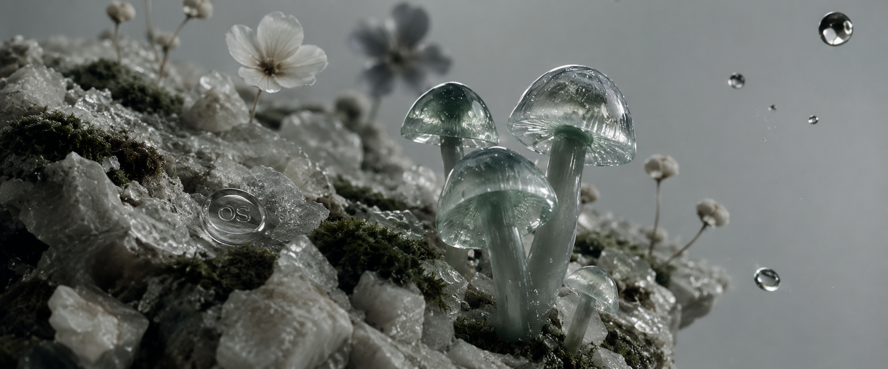
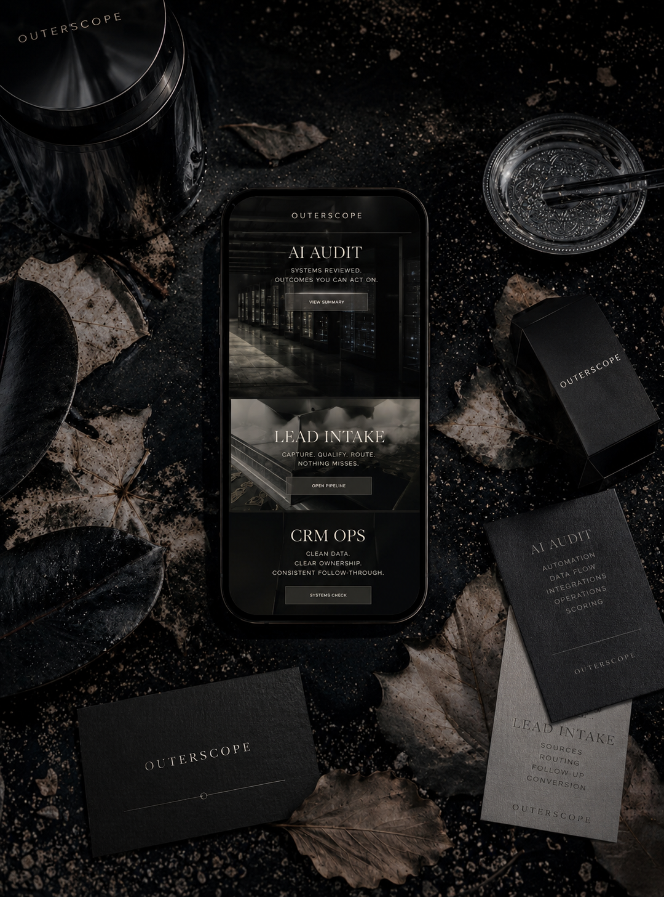
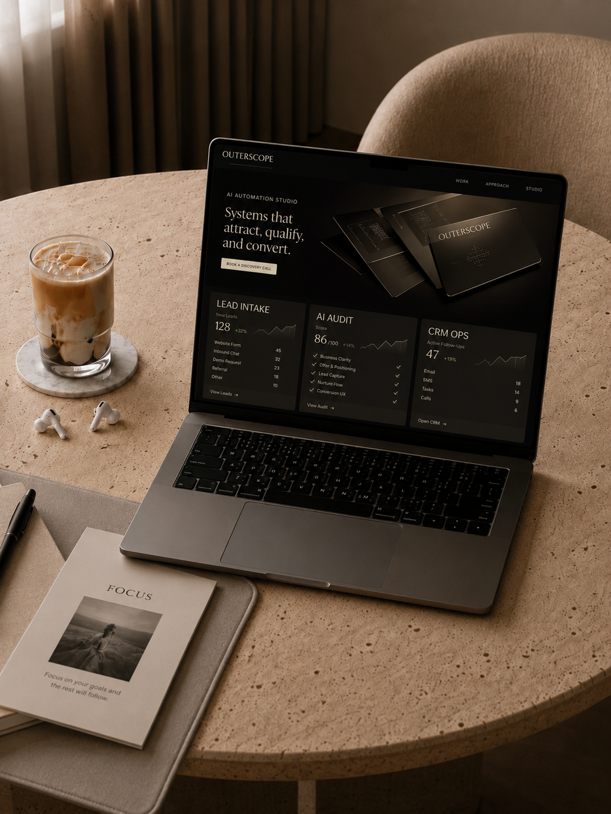
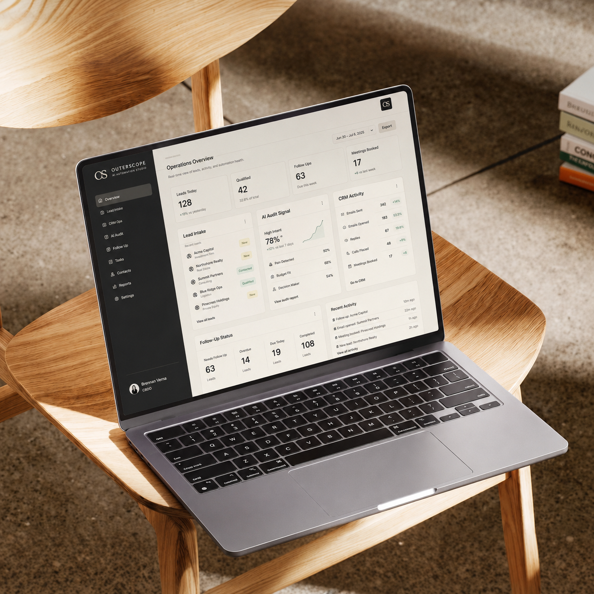
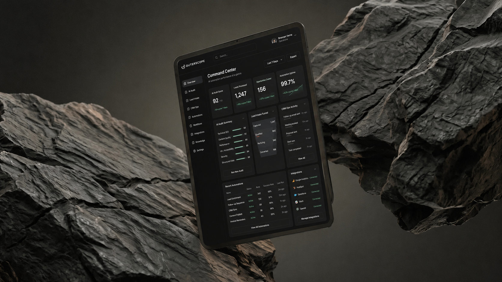

An internal AI copilot for summarizing work, drafting actions, checking records, and helping staff move faster.
The ops copilot gives the business a practical internal tool: fast lookups, clean summaries, suggested actions, and process guardrails inside the workflows already in motion.
Built as a practical automation layer: better intake, cleaner handoffs, fewer repeated tasks, and a sharper view of what needs attention next.



